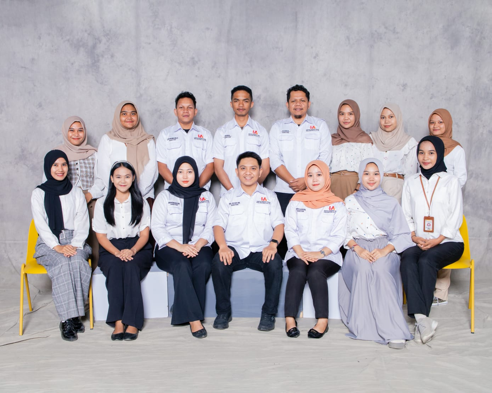

Profil KAP Ishak Awaluddin
Kantor Akuntan Publik Ishak Awaluddin didirikan dengan komitmen untuk menyajikan layanan profesional di bidang audit independen, konsultasi perpajakan, serta akuntansi keuangan untuk berbagai sektor bisnis di Indonesia.
Kami didukung oleh tenaga profesional yang berdedikasi tinggi dan memegang teguh standar etika profesi yang berlaku demi memberikan hasil kerja terbaik dengan integritas tinggi bagi seluruh klien kami.
Visi Kami
"Menjadi Kantor Akuntan Publik terkemuka yang diakui atas keunggulan, integritas, dan komitmen profesional dalam menyajikan jasa asurans dan non-asurans."
Misi Kami
- Memberikan jasa asurans dan konsultasi yang independen dan bermutu tinggi.
- Membangun hubungan jangka panjang yang saling menguntungkan dengan klien.
- Mendorong peningkatan kompetensi dan integritas sumber daya manusia secara berkelanjutan.
